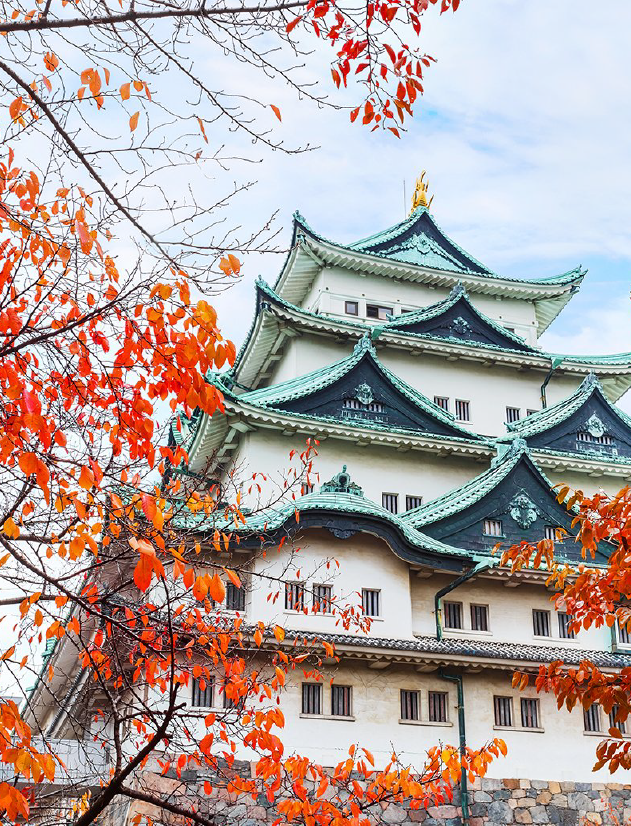

名古屋
想要體會群雄爭霸時期的風起雲湧，就去名古屋城看看。
古屋城過去為德川御三家之一的尾張德川家居城，別稱「金城」、「金鯱城」，為日本100名城之一。1945年在名古屋大空襲中被燒毀，現今為重建過後的模樣，內部收藏了不少文物。這裡也是每年櫻花季的賞櫻熱點。


想要體會群雄爭霸時期的風起雲湧，就去名古屋城看看。
古屋城過去為德川御三家之一的尾張德川家居城，別稱「金城」、「金鯱城」，為日本100名城之一。1945年在名古屋大空襲中被燒毀，現今為重建過後的模樣，內部收藏了不少文物。這裡也是每年櫻花季的賞櫻熱點。